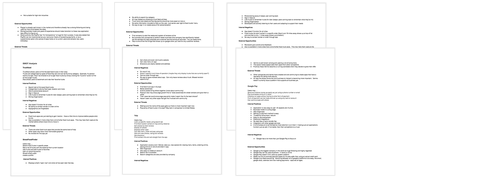
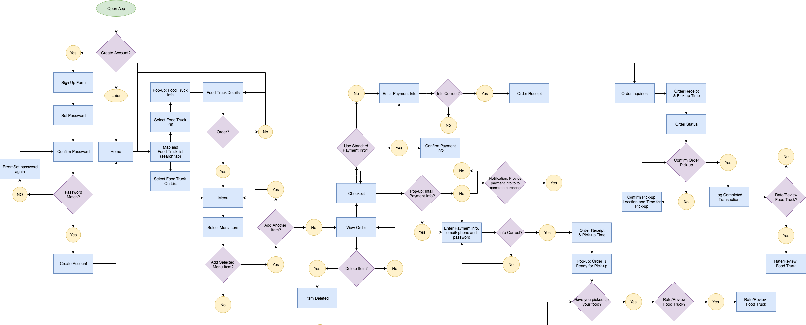
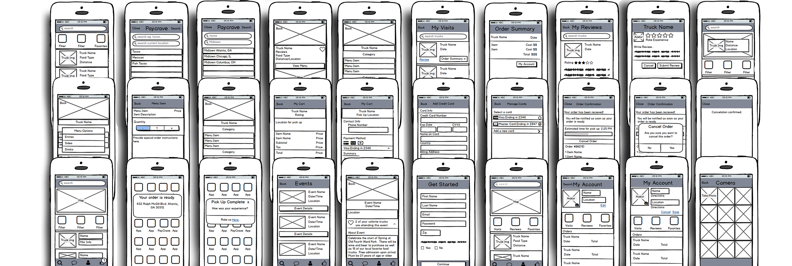
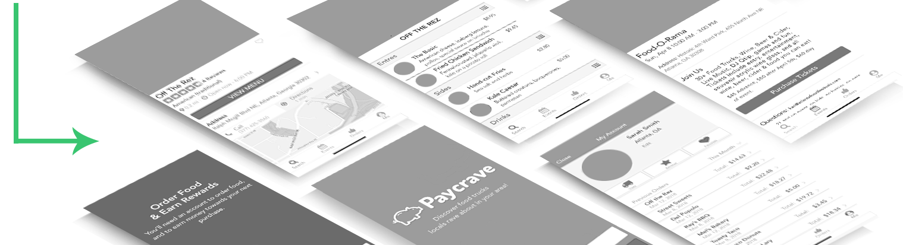
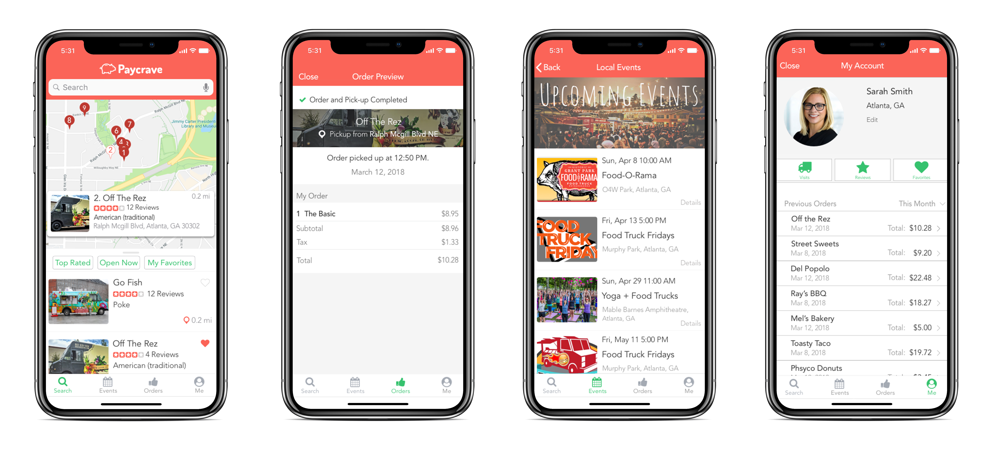

UX/UI Mobil Design
Paycrave is a UX design project for Bloc. The assignment was to design a mobile application for food trucks using the skills I had developed during my foundation training. For this application, I created surveys, competitive analysis, sitemaps, user flows, user personas and wireframes. After iterations of prototyping and testing, Paycrave's design was validated.
Paycrave is an iOS app that allows people to quickly find nearby food trucks, order food, and pay for their order prior to pick up.
87% of surveyees said they don’t seek out food trucks because it seems too involved. Include map to make finding trucks easier.
68% reviewees don’t think of food trucks as desirable dining options. Make the brand fun, clean and engaging to counteract perception.
87% of professionals (ages 22-60) think they would try a food truck nearby if it were recommended to them. Allowing users to read and leave reviews is a must.
72% thought that having a food truck app may be a fun way to try new food. Create incentive to try new food with special offers and community events.
Using information gathered from surveys (as seen above) helped me understand the current issues that could prevent people from using the app and opportunities to draw more users in. With these components, I then sought out relevant applications to narrow in on what strategies are currently working well for those companies and what could be done better in order to make informed decisions about how to position Paycrave, and what could be done to help elevate the function of Paycrave’s design.
Paycrave’s user flow starts out with the conventional log in/sign up flow with an opportunity to opt out until time of purchase just incase the thought of initially logging in seems too involved. There are four main categories within the app (Food Truck Search, Events, Orders and Profile). Users are taken straight to the Truck Search portion of the app as the initially hook. Users will then have an option to explore all other portions of the app once they decide to get more involved. Paycrave’s objective is fast and efficient food ordering and every decision made reflects that goal. For example, users have the ability to easily store payment methods, eliminating the need to re-enter payment information during every order.
Keeping Paycrave’s objective in mind, each screen was designed to be intuitive and user-friendly. Users can quickly view important food truck information from the drop pin pop up or off a list that is organized by distance. After a menu item is selected, users can conveniently view their order summary via the “View Order” button once an item has been selected. Also, more menu items can be utilized on the navigation bar at the bottom of each page. A user can view account settings along with other organizational features associated with the “me” tab. Users may also view upcoming events by clicking on the “events” icon on the bottom nav bar as well as current orders for pick up by clicking the “orders” tab. The bottom nav function proved to be the easiest way for users to use all features without distracting them from Paycrave’s main purpose.
 Using Sketch, Adobe CC and the basic logo, color, and typography guidelines given to me, I began to populate Paycrave and make the wireframes come to life. During this process I worked closely with my mentor to make sure that the design never overpowered the apps usability and continued to gather feedback about the intuitiveness and flow of the application until the design was validated.
 clickable prototype